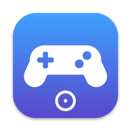

Your game controller is now a mouse and media remote for your Mac. Browse, watch and listen from the couch.
For macOS 14 Sonoma or later. Works with Xbox, PlayStation and other controllers.
The left stick moves the pointer with a gentle curve for precise aiming. Click the stick for a slower, precise mode.
The right stick scrolls pages, lists and timelines, up, down and sideways.
Play, pause, skip tracks, change the volume and mute, without reaching for the keyboard.
One button cycles through your open apps, like ⌘ Tab.
A small circle shows while you steer and disappears as soon as you touch the real mouse.
Give any button, trigger or D-pad direction a new job, with a second one for holding it: clicks, media keys, Mission Control or any keyboard shortcut. Swap the sticks if you like.
No Dock icon. Turn it on or off by holding the controller's home button for a second.
| Left stick | Move the pointer (click it for precise mode) |
| Right stick | Scroll (click it to mute) |
| A / ✕ | Click, hold to drag |
| B / ○ | Right click, hold for Esc |
| X / □ | Middle click |
| Y / △ | Mission Control |
| D-pad | Arrow keys |
| Bumpers | Previous and next track |
| Triggers | Volume down and up |
| Menu / Options | Play and pause |
| View / Share | Switch apps |
| Home button | Spotlight, hold to turn Stickmouse on or off |
This is the default layout. Change any of it in Customize Buttons; speeds, deadzone and timings are in Settings.
Your license key arrives by email. Paste it in Stickmouse, menu bar icon › Buy Stickmouse.
Stickmouse is not distributed through the App Store. Open System Settings › Privacy & Security, scroll down and click "Open Anyway" next to Stickmouse. You only need to do this once.
macOS only lets apps with Accessibility access move the pointer, click and press keys. Stickmouse uses it for nothing else, and it never connects to the internet except to check your license key.
Any controller macOS supports: Xbox Wireless, Xbox Elite, PlayStation DualShock 4 and DualSense, and most MFi controllers, over Bluetooth or USB.
Yes. Hold the home button for a second to turn Stickmouse off while you play, and again to turn it back on.
Yes, one license works on up to 3 of your Macs.